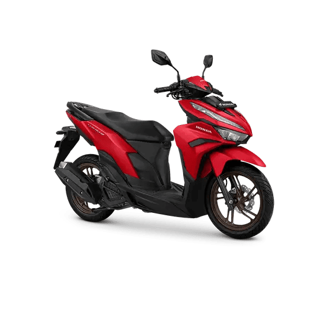

Suku Cadang Motor Honda
Berikut adalah daftar suku cadang dan aksesori asli untuk berbagai model motor Honda yang tersedia di Takutu Garage.
Vario 125 / 150 / 160
 Piston Vario 125/150 OEM
Piston Vario 125/150 OEM Ring Piston Vario 160
Ring Piston Vario 160 Filter Udara Original Honda
Filter Udara Original Honda Busi
Busi Kampas Rem Depan
Kampas Rem Depan  Kampas Rem Belakang
Kampas Rem Belakang Drive Belt
Drive Belt
PCX 125 / 160
- Piston PCX 125/160 Original
- Camshaft PCX
- Timing Chain Set
- Filter Udara PCX
- Busi Denso IU24
- Body Kit PCX Sport
CB150R / CBR150R
- Piston CB150R High Compression
- Clutch Assembly CB150R
- Chain Sprocket Set 14/48T
- Brake Disc Front Rear
- Exhaust System Racing
Lihat Juga:
Ingin order? Hubungi kami via WhatsApp untuk cek stok dan harga terbaru!